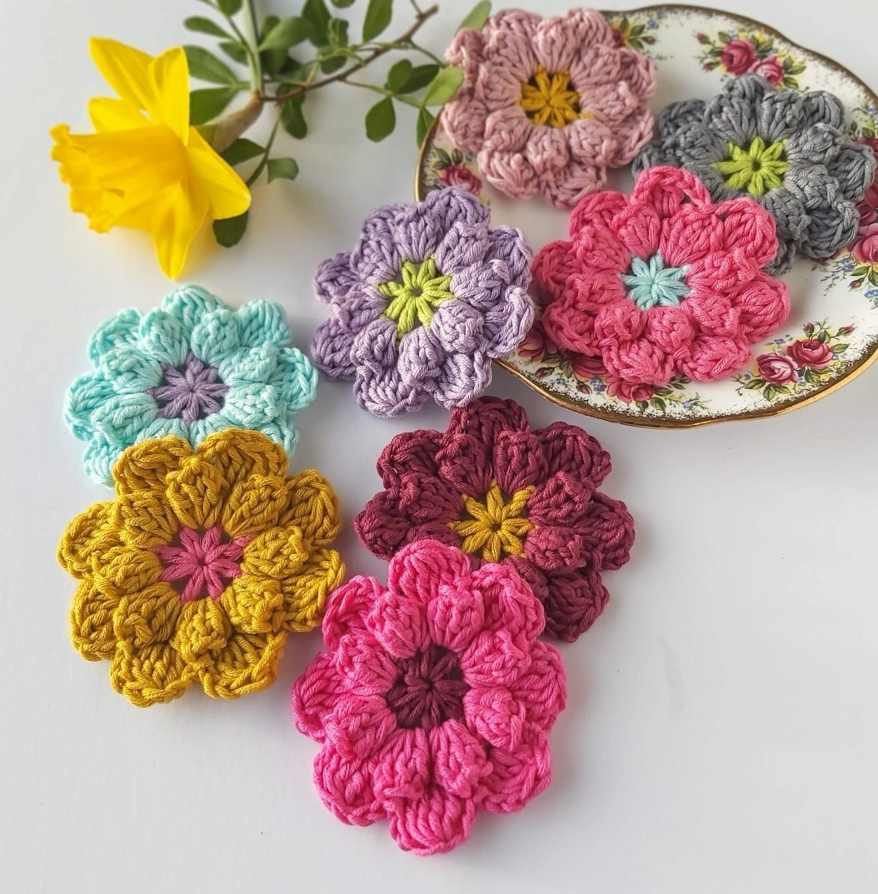
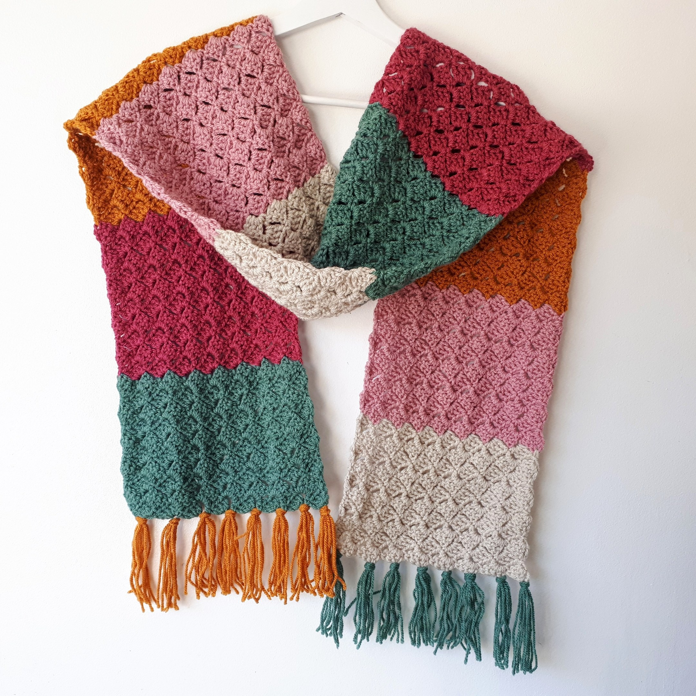
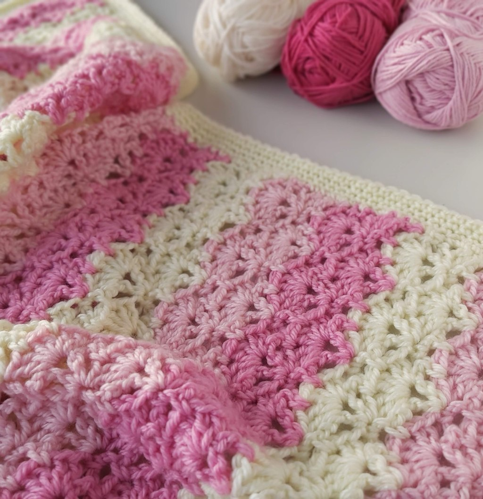

How to Make Crochet Flower
Saturday, 31 May 2020
I love Crochet Flowers! Because I have not shared a flower pattern for a while, I am going try and share some easy and colourful crochet patterns this year. If you want to learn How to make Easy Crochet Flowers, just read on! Sometimes a simple little crochet project is the perfect wind down at the end of a busy day, and enjoy getting creative with your yarn scraps! Read more
Crochet Color-Block Scarf – Easy Free Pattern
Saturday, 31 May 2020
I have a free pattern for a color block scarf to share today! As soon as Autumn begins to show, I start planning Winter crochet scarfs and looking through my stash for bright Autumnal yarn colours. This Free pattern for a cosy crochet scarf, is suitable for a beginner and is perfect for cooler weather, to wrap you in all the warmth you will need. The easy repeat pattern makes this project a fast make, you could rustle up a trendy color-block scarf for everyone on your Christmas list! Read more
Lacy Shells Crochet Baby Blanket
Saturday, 31 May 2020
I love bright colourful baby blankets but I also have a love of Vintage Inspired crochet lace stitch patterns. I wanted to make a light and airy baby blanket that is suitable for Summer but also for keeping a small baby cosy and swaddled. The 4-row repeat stitch pattern for this Lacy Shells Crochet baby blanket is perfect, and I hope you like it too! Read more